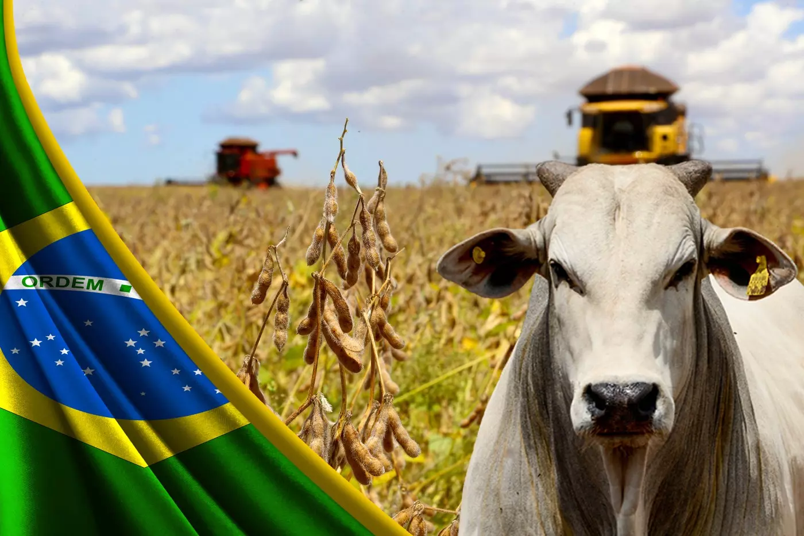

A agricultura é crucial para nossas vidas porque garante a segurança alimentar, sustenta a economia, promove o desenvolvimento rural, preserva recursos naturais, enriquece a cultura, contribui para a saúde e nutrição, impulsiona inovações tecnológicas e promove práticas ambientais sustentáveis.
A sua importância consiste no fato de que a alimentação principalmente depende dela, a proteína, o vegetal, as frutas, os grãos, todos vêm da mesma fonte, o campo. A tecnologia recém inserida no campo, tem se mostrado grande parceira da produção agropecuária no Brasil. Otimizou o manejo de cultivos e rebanhos, reduziu custos opracionais por meio da automação, promovendo sustentabilidade e melhora no produto.
Com o avanço das tecnologias no setor agropecuário, a capacitação dos funcionários se tornou uma prioridade para os produtores. A introdução de ferramentas avançadas, como sistemas de gestão de dados, agricultura de precisão e automação, exige que os trabalhadores adquiram novas habilidades e conhecimentos. Investir em treinamentos especializados permite que a equipe compreenda e utilize eficazmente essas tecnologias, maximizando sua eficiência e impacto positivo na produção. Além disso, a capacitação contínua promove a adaptação às inovações, garantindo que a equipe possa implementar melhores práticas, resolver problemas rapidamente e manter a competitividade no mercado. Assim, a formação adequada não só melhora a operação diária, mas também contribui para o sucesso a longo prazo do empreendimento agropecuário.